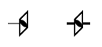

The symbol above shows a fourfold inversion axis, i.e. a fourfold
inversion axis perpendicular to the screen.
A fractional value next to the symbol indicates the height of the inversion
centre above the XY plane.
As with the fourfold axis, a positive rotation is anticlockwise.
A fourfold rotation about the c-axis, i.e. about
the line 0,0,z, followed by an inversion at the origin will have
the corresponding symmetry operator y,-x,-z.
This axis has the written symbol "-4"
(where the minus sign is usually written above the digit).
The solid centre of the symbol emphasises the implied
twofold axis that results from a fourfold inversion axis.

In space group diagrams for cubic symmetry, fourfold inversion axes
are shown along both X and Y directions as well as along the Z direction
when present. These are shown by the symbols above. The right-hand symbol
shows the inversion point along the fourfold inversion axis.
By contrast, the line in the left-hand symbol points towards
the inversion point.
A fractional value next to either symbol indicates the height of the axis
of rotation above the XY plane.